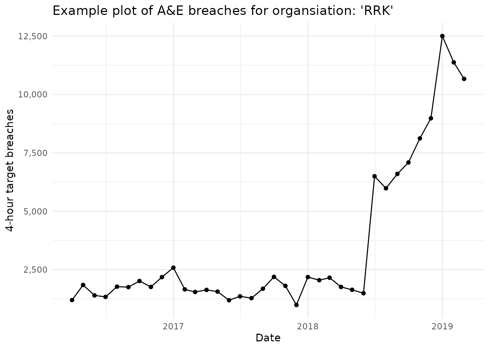

Introduction to the `NHSRplotthedots` package
Source:vignettes/NHSRplotthedots.Rmd
NHSRplotthedots.RmdWelcome to the NHS-R community’s collaborative package for building a specific type of statistical process control (SPC) chart, the XmR chart. We are aiming to support the NHS England’s ‘Making Data Count’ programme, a programme which encourages boards, managers, and analyst teams to present data in ways that show change over time, and drive better understanding of indicators than ‘RAG’ (red, amber, green) rated board reports often support.
This tutorial is a concise take on applying the function to some
Accident and Emergency breach data for some NHS hospitals. We’ll take
this from the NHSRdatasets package, another of our packages
providing example datasets for training in an NHS/healthcare
context.
The analyses below use the tidyverse packages:
dplyr to manipulate the data, and ggplot2 for
plotting (when not using NHSRplotthedots).
Firstly, let’s load the data, filter for University Hospital Birmingham NHS Foundation Trust, because they are a good example for the type of charts below. Let’s also do a simple timeseries plot to see why this is the case.
library(NHSRplotthedots)
library(NHSRdatasets)
library(dplyr)
library(ggplot2)
library(scales)
data("ae_attendances")
ae_attendances %>%
filter(org_code == "RRK", type == 1) %>%
ggplot(aes(x = period, y = breaches)) +
geom_point() +
geom_line() +
scale_y_continuous("4-hour target breaches", labels = comma) +
scale_x_date("Date") +
labs(title = "Example plot of A&E breaches for organsiation: 'RRK'") +
theme_minimal()
This minimal plot shows the changes over time, and we will look at it in two ways. The first, we’ll look at 2016/17 & 2017/18, which is apparently stable and, during 2018, the trust merged with another large 3-hospital provider trust, so the numbers through A&E shot up dramatically when combined under one trust code. We can use a change point in our plots to consider this.
Let’s now use the ptd_spc function to draw our plot.
We need to provide it with a data.frame that contains
our data, and provide a value_field for the y-axis, and a
date_field for the x-axis. In addition, to ensure the
points are coloured correctly, we need to set the
improvement_direction to “decrease”, here (as fewer A&E
breaches is better).
Stable period
stable_set <- ae_attendances %>%
filter(
org_code == "RRK",
type == 1,
period < as.Date("2018-04-01")
)
ptd_spc(
stable_set,
value_field = breaches,
date_field = period,
improvement_direction = "decrease"
)
From the chart above, we can see the centre line (mean) and the control limits calculated according the the XmR chart rules. Our points that are between the control limits are within control and showing ‘common-cause’ or ‘natural’ variation. We can see 8 sequential points coloured in blue. This is triggered by a rule that looks for >=7 points on one side of the mean. This could be viewed as a period where fewer breaches than average were detected, which may hold some learning value for the organisation.
Change point
From the first plot above, we can see that the change is noticed at
01/07/2019. We understand the reason for the change (the merging of two
trusts), and believe this will be the new normal range for the process,
so it would be valid to rebase at this point. To rebase (change the
modelling period for control limits), we can pass a vector of dates at
the point we wish to rebase using the ptd_rebase()
function.
change_set <- ae_attendances %>%
filter(org_code == "RRK", type == 1)
ptd_spc(change_set,
value_field = breaches,
date_field = period,
improvement_direction = "decrease",
rebase = ptd_rebase(as.Date("2018-07-01"))
)
#> Warning in ptd_add_short_group_warnings(.): Some groups have 'n < 12'
#> observations. These have trial limits, which will be revised with each
#> additional observation until 'n = fix_after_n_points' has been reached.You can see that our limit calculation has now shifted at the rebase point.
Faceting
In ggplot2, a facet refers to splitting
or plotting by variables, into separate plots or regions. Imagine you
want to do an SPC for all trusts in a dataset, or all specialties at a
trust. Facet will help you do this, and you can pass the field that
controls this to the ptd_spc argument
facet_field.
Here we will pick 6 trusts at random and plot their breaches, faceting across them.
We’ll also combine this with a couple more options that are specific
to the plot. This is done with the ptd_create_ggplot
function in the backend, but also works with the generic
plot. To find out the available options, see the help-file
for: ?ptd_create_ggplot.
We will let the x-axis scale change for each plot for each plot (otherwise some would look crushed against a larger trusts) and we will also change the x-axis breaks to 3-months, as 1 month looked too busy.)
facet_set <- ae_attendances %>%
filter(
org_code %in% c("RRK", "RJC", "RJ7", "R1K", "R1H", "RQM"),
type == 1,
period < as.Date("2018-04-01")
)
ptd_spc(
facet_set,
value_field = breaches,
date_field = period,
facet_field = org_code,
improvement_direction = "decrease"
) %>%
plot(fixed_y_axis_multiple = FALSE, x_axis_breaks = "3 months")From this, the point-size seems too big, and it would be worth
replacing the y-axis title with something better. Again, this is done
with the plot function arguments:
facet_set <- ae_attendances %>%
filter(
org_code %in% c("RRK", "RJC", "RJ7", "R1K", "R1H", "RQM"),
type == 1,
period < as.Date("2018-04-01")
)
ptd_spc(
facet_set,
value_field = breaches,
date_field = period,
facet_field = org_code,
improvement_direction = "decrease"
) %>%
plot(
fixed_y_axis_multiple = FALSE,
x_axis_breaks = "3 months",
point_size = 2,
y_axis_label = "Number of 4-hour A&E target breaches"
)As the plots are based on ggplot2 you can override
elements of the styling and theme as additional arguments using
theme, or by using theme_override with your
new theme elements in a list.
facet_set <- ae_attendances %>%
filter(
org_code %in% c("RRK", "RJC", "RJ7", "R1K", "R1H", "RQM"),
type == 1,
period < as.Date("2018-04-01")
)
a <- ptd_spc(
facet_set,
value_field = breaches,
date_field = period,
facet_field = org_code,
improvement_direction = "decrease"
) %>%
plot(
fixed_y_axis_multiple = FALSE,
x_axis_breaks = "3 months",
point_size = 2,
y_axis_label = "Number of 4-hour A&E target breaches"
)
a + theme(axis.text.x = element_text(size = 6, angle = 45))Interactive plots
It’s also possible to create interactive plots using the
plotly package by replacing the call to plot
with ptd_create_plotly. This takes the same arguments as
plot (and ptd_create_ggplot).
For instance, we can use the code from the last example to make an interactive version:
ptd_spc(
facet_set,
value_field = breaches,
date_field = period,
facet_field = org_code,
improvement_direction = "decrease"
) %>%
ptd_create_plotly(
fixed_y_axis_multiple = FALSE,
x_axis_breaks = "3 months",
point_size = 2,
y_axis_label = "Number of 4-hour A&E target breaches",
icons_position = "none"
)Come and join us!
This is a collaborative project that is still early in its life. All
contributors are volunteers, and more volunteers would be very welcome
(there’s even stuff that doesn’t require R coding to help
with!).
Find out more at: github.com/nhs-r-community/NHSRplotthedots